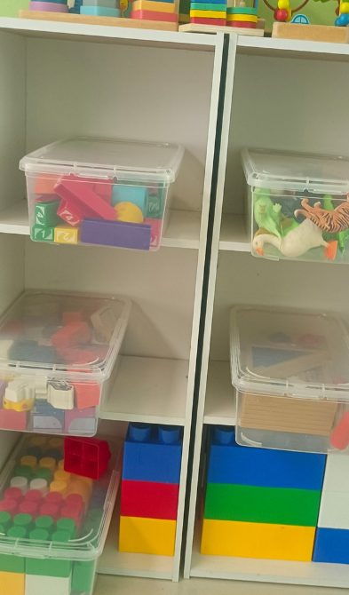
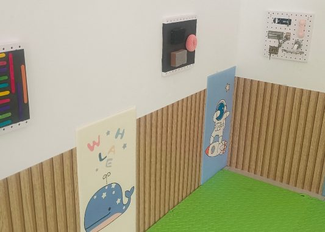
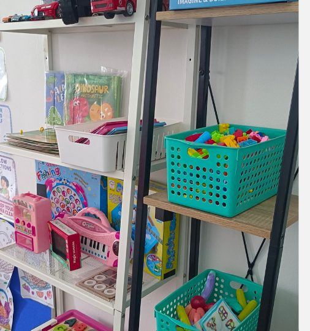

Explore · Gallery
Life at My Little House
A peek inside our childcare home in Bintulu — the rooms, the learning corners, and the spaces our children play in every day.
Inside Our Home
A look around My Little House
Real photos of our rooms and learning corners in Bintulu — the play kitchen, the reading nook, the sensory space, and the shelves the children reach themselves.






Tap the photo, or use the arrows, for the next one
The best way to see it is in person
Come by for a walk-through any weekday — meet the teachers, see the rooms, and picture your child here.
Book a Visit